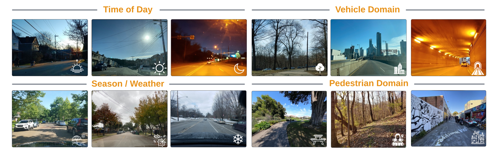

Top-down Bird's Eye View (BEV) maps are a popular representation for ground robot navigation due to their richness and flexibility for downstream tasks. While recent methods have shown promise for predicting BEV maps from First-Person View (FPV) images, their generalizability is limited to small regions captured by current autonomous vehicle-based datasets. In this context, we show that a more scalable approach towards generalizable map prediction can be enabled by using two large-scale crowd-sourced mapping platforms, Mapillary for FPV images and OpenStreetMap for BEV semantic maps.
We introduce Map It Anywhere (MIA), a data engine that enables seamless curation and modeling of labeled map prediction data from existing open-source map platforms. Using our MIA data engine, we display the ease of automatically collecting a 1.2 million FPV & BEV pair dataset encompassing diverse geographies, landscapes, environmental factors, camera models & capture scenarios. We further train a simple camera model-agnostic model on this data for BEV map prediction. Extensive evaluations using established benchmarks and our dataset show that the data curated by MIA enables effective pretraining for generalizable BEV map prediction, with zero-shot performance far exceeding baselines trained on existing datasets by 35%. Our analysis highlights the promise of using large-scale public maps for developing & testing generalizable BEV perception, paving the way for more robust autonomous navigation.
We show the utility of the MIA data engine by sampling six different urban-centered locations, extending to the suburbs. We selected highly populated cities - New York, Chicago, Houston, and Los Angeles - to collect challenging scenarios with diverse and dense traffic. Additionally, we included Pittsburgh and San Francisco for their unique topologies. More details and download links for the dataset can be found in the dataset page. We are in the progress of curating a larger dataset with more diverse locations and scenarios. Stay tuned for updates! Let us know if you have suggestions.  Samples from the MIA dataset: Highlighting diversity in time of day, seasons, weather and capture scenarios from vehicles & pedestrians.
This work is built on the incredible efforts of the community. Shout out to Paul-Edouard Sarlin and his inspiring work, OrienterNet, which uses Mapillary and OSM for visual localization and serves as the foundation of our work. We also extend our gratitude to Mapillary, OpenStreetMap, and their contributors for providing the data that powers our work.
@inproceedings{ho2024map,
title = {Map It Anywhere (MIA): Empowering Bird's Eye View Mapping using Large-scale Public Data},
author = {Ho, Cherie and Zou, Jiaye and Alama, Omar and Kumar, Sai Mitheran Jagadesh and Chiang, Benjamin and Gupta,
Taneesh and Wang, Chen and Keetha, Nikhil and Sycara, Katia and Scherer, Sebastian},
year = {2024},
booktitle = {Advances in Neural Information Processing Systems},
url = {https://arxiv.org/abs/2407.08726},
code = {https://github.com/MapItAnywhere/MapItAnywhere}
}